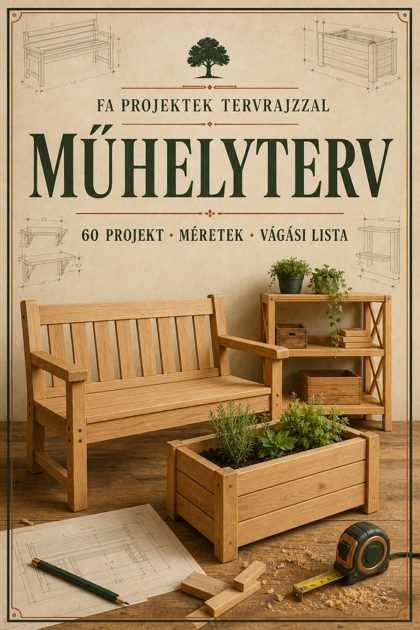
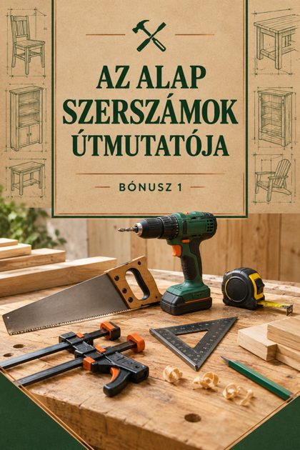
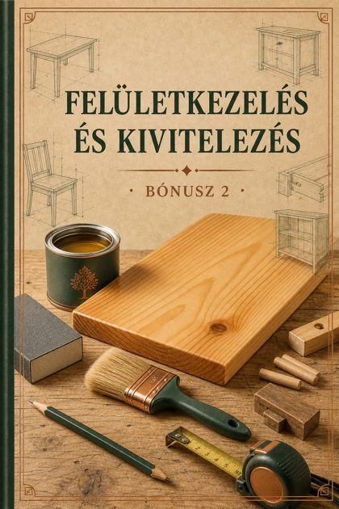

A teljes csomag
Az útmutató, a 60 projekt és a 2 bónusz egyetlen ZIP-fájlban · 6 MB
Vagy válassz fájlt

Fő útmutatóAz első projekted 48 óra alatt
Kezdd itt · 22 oldal · PDF 1.0 MB
60 projektMűhelyterv – 60 projekt tervrajzzal
Tervrajzok, vágási listák, lépések · 122 oldal · PDF 3.6 MB

Bónusz 1Az alap szerszámok útmutatója
Mit vegyél és hogyan használd · 11 oldal · PDF 0.6 MB

Bónusz 2Felületkezelés és kivitelezés
Csiszolás, olaj, lazúr, lakk · 12 oldal · PDF 0.7 MB
Hogyan kezdj hozzá
- Olvasd el a fő útmutató első fejezeteit, és válaszd ki a szerszámkészletedet.
- Válassz egy egyszerű projektet (pl. virágláda vagy kerti pad), és nyomtasd ki a két oldalát.
- Vágd méretre az anyagot a vágási lista alapján, és kövesd a lépéseket.
- A felületkezelés útmutatóval fejezd be a munkát: csiszolás, olaj vagy lazúr.
Ha a letöltés nem indul el, koppints a „Megnyitás” gombra, és mentsd el a fájlt a böngészőből. A munkához mindig viselj védőfelszerelést.